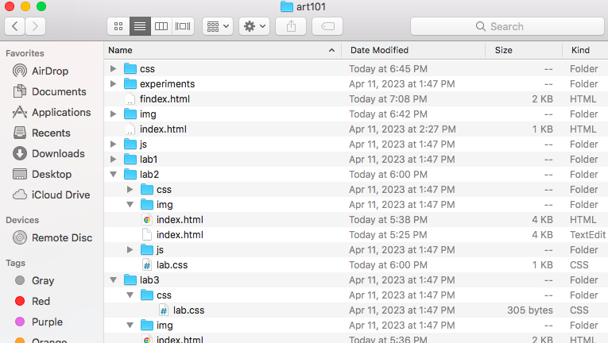

Lab 3 File Structures
The idea of this lab was to create a local file structure on my computer and add it onto and index.html file.
Challenges
Creating files were extremely difficult to navigate and inputing an image from my desktop onto the page was also difficult. In addition, I had issues implementing the correct links to the files.
Results
I was able to put together my local file strucutre onto an index.html file and load it on a web browser
